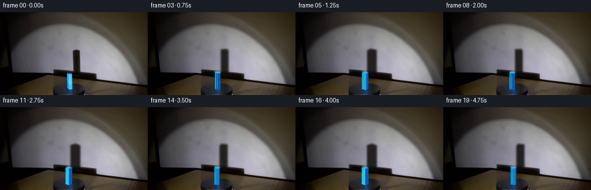
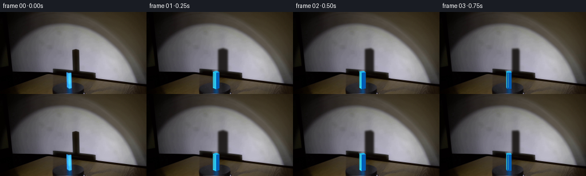
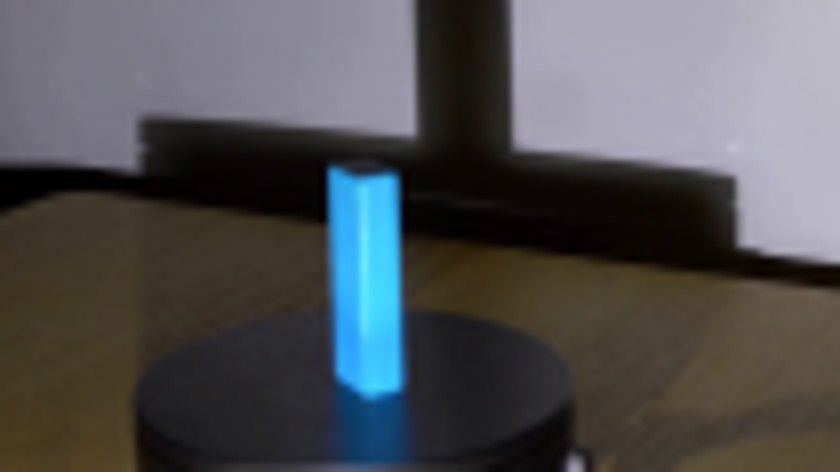
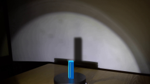
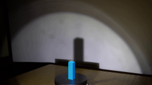

CODING AGENTS AS PIXEL WORLD MODELS
traex/GPT-5.6-Sol · 0075
点击播放 · 原生 RGB 像素
逐轮保存的候选
回放视频、检查图与代码变化。
每份候选均可单独播放。实际图片检查记录在下方工具轨迹中。
候选 01播放与检查图
点击播放 · 原生 RGB 像素


展开代码变化
--- 上一保存版本
+++ 本次保存版本
@@ -0,0 +1,194 @@
+"""Generate a locked-camera animation of the photographed rotating-shadow demo.
+
+The photographed first frame is also used as the scene plate. Only the two
+things that physically move are synthesized: the turntable's weak surface
+detail and the small blue cuboid, together with the cuboid's shadow on the
+wall. Geometry is drawn oversize and reduced to keep the photographic soft
+edges of the source.
+"""
+from pathlib import Path
+
+import cv2
+import numpy as np
+from PIL import Image, ImageDraw
+
+import artifact_io
+
+
+ROOT = Path(__file__).resolve().parent
+W, H = 256, 144
+SS = 4
+
+
+def remove_original_movers(src):
+ """Make a clean photographic plate under the original block/shadow."""
+ plate = src.copy()
+
+ # The wall is smoothly illuminated, so horizontal interpolation restores
+ # the narrow old upright shadow considerably better than generic inpaint.
+ wall = plate.astype(np.float32)
+ for y in range(61, 106):
+ xl, xr = 120, 145
+ a = src[y, xl].astype(np.float32)
+ b = src[y, xr].astype(np.float32)
+ for x in range(121, 145):
+ q = (x - xl) / (xr - xl)
+ # Preserve a little of the sensor texture from nearby wall.
+ val = (1 - q) * a + q * b
+ noise = src[y, min(151, x + 27)].astype(np.float32)
+ val += 0.13 * (noise - ((1-q)*src[y, 147] + q*src[y, 151]))
+ wall[y, x] = val
+ # Feather only the margins of the repaired strip into the photograph.
+ m = np.zeros((H, W), np.float32)
+ cv2.rectangle(m, (121, 61), (144, 105), 1, -1)
+ m = cv2.GaussianBlur(m, (0, 0), 2.2)[..., None]
+ plate = np.clip(src * (1-m) + wall * m, 0, 255).astype(np.uint8)
+
+ # Remove the foreground cuboid. Telea follows both the table/wall edge
+ # and the dark turntable top through this small, narrow region.
+ mask = np.zeros((H, W), np.uint8)
+ cv2.rectangle(mask, (114, 102), (128, 137), 255, -1)
+ plate = cv2.inpaint(plate, mask, 3, cv2.INPAINT_TELEA)
+ return plate
+
+
+def soft_shadow(frame, theta, orbit_x):
+ """Composite the enlarged wall shadow cast by the rotating square prism."""
+ # Square corners in block-local coordinates, rotated clockwise as viewed
+ # from above. The same oblique projection is used for block and shadow.
+ a = 3.55
+ corners = np.array([[-a, -a], [a, -a], [a, a], [-a, a]], np.float32)
+ c, s = np.cos(theta), np.sin(theta)
+ # Negative theta means clockwise in the top view.
+ rot = np.array([[c, -s], [s, c]], np.float32)
+ p = corners @ rot.T
+ px = p[:, 0] + 0.55 * p[:, 1]
+ py = 0.20 * p[:, 0] - 0.31 * p[:, 1]
+
+ scale = 1.48
+ center_x = 132.0 + orbit_x * 1.25
+ bottom_y = 107.0
+ bottom = np.c_[center_x + scale*px, bottom_y + scale*py]
+ top = bottom.copy()
+ top[:, 1] -= 41.0
+
+ # Silhouette of the extruded prism = convex hull of top and bottom faces.
+ hull = cv2.convexHull(np.vstack([bottom, top]).astype(np.float32)).reshape(-1, 2)
+ layer = np.zeros((H*SS, W*SS), np.float32)
+ cv2.fillConvexPoly(layer, np.round(hull*SS).astype(np.int32), 1.0,
+ lineType=cv2.LINE_AA)
+ # Real spotlight has a penumbra visible around the large shadow.
+ layer = cv2.GaussianBlur(layer, (0, 0), 1.55*SS)
+ layer = cv2.resize(layer, (W, H), interpolation=cv2.INTER_AREA)[..., None]
+ # Warm near-black shadow. Keep some of the wall's grain/lighting visible.
+ opacity = 0.86 * layer
+ shade = np.array([15.0, 12.0, 9.0], np.float32)
+ out = frame.astype(np.float32) * (1-opacity) + shade * opacity
+ return np.clip(out, 0, 255).astype(np.uint8)
+
+
+def turntable_detail(frame, theta):
+ """Add tiny rotating surface marks to make the symmetric disk visibly turn."""
+ big = Image.fromarray(frame).resize((W*SS, H*SS), Image.Resampling.BICUBIC)
+ d = ImageDraw.Draw(big, "RGBA")
+ cx, cy, rx, ry = 119.0, 136.2, 28.2, 13.8
+ # Sparse, deliberately subtle concentric/radial marks on the black top.
+ marks = [(-2.42, 0.64, 9), (-0.78, 0.79, 7), (0.48, 0.72, 8),
+ (1.88, 0.54, 6), (2.72, 0.86, 5)]
+ for ang, rad, length in marks:
+ q = ang + theta
+ q2 = q + 0.10 + length*0.002
+ pts = []
+ for u in np.linspace(q, q2, 6):
+ pts.append(((cx + rx*rad*np.cos(u))*SS,
+ (cy + ry*rad*np.sin(u))*SS))
+ # Marks disappear naturally when they rotate below the cropped/front
+ # area; all remain clipped to the projected top ellipse by checking.
+ if all((x/SS-cx)**2/rx**2 + (y/SS-cy)**2/ry**2 <= 1.02 for x,y in pts):
+ d.line(pts, fill=(95, 106, 124, 22), width=SS)
+ return np.asarray(big.resize((W, H), Image.Resampling.LANCZOS)).copy()
+
+
+def cuboid_geometry(theta, orbit_x):
+ a = 3.55
+ local = np.array([[-a, -a], [a, -a], [a, a], [-a, a]], np.float32)
+ c, s = np.cos(theta), np.sin(theta)
+ rot = np.array([[c, -s], [s, c]], np.float32)
+ world = local @ rot.T
+ center_x = 120.5 + orbit_x
+ base_y = 133.7 + 0.12*np.sin(theta)
+ screen = np.c_[center_x + world[:, 0] + 0.55*world[:, 1],
+ base_y + 0.20*world[:, 0] - 0.31*world[:, 1]]
+ top = screen.copy()
+ top[:, 1] -= 28.4
+ return world, screen, top
+
+
+def draw_cuboid(frame, theta, orbit_x):
+ """Render a lit rotating blue rectangular prism over the photo."""
+ world, bot, top = cuboid_geometry(theta, orbit_x)
+ canvas = Image.new("RGBA", (W*SS, H*SS), (0, 0, 0, 0))
+ d = ImageDraw.Draw(canvas, "RGBA")
+
+ # Draw far sides first. Fixed world-space light makes face brightness vary
+ # naturally while the cuboid turns beneath the stationary spotlight.
+ light = np.array([-0.82, -0.57], np.float32)
+ sides = []
+ for i in range(4):
+ j = (i+1) % 4
+ edge = world[j] - world[i]
+ normal = np.array([edge[1], -edge[0]], np.float32)
+ normal /= np.linalg.norm(normal)
+ depth = (world[i, 1] + world[j, 1]) * .5
+ lambert = max(0.0, float(normal @ light))
+ # Saturated cyan-blue plastic, matching the photographed block.
+ col = np.array([2, 92, 181]) + lambert*np.array([48, 139, 73])
+ poly = np.vstack([top[i], top[j], bot[j], bot[i]])
+ sides.append((depth, poly, tuple(np.clip(col, 0, 255).astype(int))))
+ # positive world y is farther from camera in this projection
+ for _, poly, col in sorted(sides, key=lambda z: -z[0]):
+ pts = [tuple(v*SS) for v in poly]
+ d.polygon(pts, fill=col + (255,))
+
+ # Bright upper face catches the lamp, plus one narrow vertical specular.
+ top_col = (28, 186, 242, 255)
+ d.polygon([tuple(v*SS) for v in top], fill=top_col)
+
+ # Highlight on whichever visible edge faces the lamp. Kept restrained so
+ # it resembles the narrow cyan stripe already present in frame zero.
+ vis = min(sides, key=lambda z: z[0])
+ poly = vis[1]
+ x0 = (0.72*poly[0,0] + 0.28*poly[1,0])*SS
+ y0 = (poly[0,1] + 1.2)*SS
+ x1 = (0.72*poly[3,0] + 0.28*poly[2,0])*SS
+ y1 = (poly[3,1] - 2.0)*SS
+ d.line([(x0,y0), (x1,y1)], fill=(98, 237, 255, 145), width=max(1, SS))
+
+ rgba = np.asarray(canvas.resize((W, H), Image.Resampling.LANCZOS)).astype(np.float32)
+ alpha = rgba[..., 3:4] / 255.0
+ out = frame.astype(np.float32)*(1-alpha) + rgba[..., :3]*alpha
+ return np.clip(out, 0, 255).astype(np.uint8)
+
+
+def generate():
+ first = np.asarray(Image.open(ROOT / "first_frame.png").convert("RGB"))
+ plate = remove_original_movers(first)
+ frames = [first.copy()] # contract: exact source pixels in frame zero
+
+ # One steady clockwise revolution in five seconds (4 fps).
+ for i in range(1, 20):
+ theta = -2.0*np.pi*i/20.0
+ # The block is very slightly off the turntable's exact spindle center.
+ orbit_x = 1.25*np.cos(theta + 0.15)
+ f = soft_shadow(plate.copy(), theta, orbit_x)
+ f = turntable_detail(f, theta)
+ f = draw_cuboid(f, theta, orbit_x)
+ frames.append(f)
+ frames = np.stack(frames).astype(np.uint8)
+ assert frames.shape == (20, 144, 256, 3)
+ assert np.array_equal(frames[0], first)
+ return frames
+
+
+if __name__ == "__main__":
+ artifact_io.save(generate(), ROOT)
可观测工具轨迹
实际执行的命令与返回图片。
命令 1exit 0
/bin/bash -lc "cat prompt.txt && printf '\\n---RULES---\\n' && cat GENERATION_RULES.md"
命令 2exit 1
/bin/bash -lc "find . -maxdepth 2 -type f -printf '%p %s bytes\\n' | sort && printf '\\nffmpeg:\\n' && command -v ffmpeg && ffmpeg -version | head -3 && printf '\\npython libs:\\n' && python - <<'PY' mods=['cv2','PIL','numpy','imageio','moviepy','scipy'] for m in mods: try: x=__import__(m); print(m,'OK',getattr(x,'__version__','')) except Exception as e: print(m,'NO',e) PY"
命令 3exit 0
/bin/bash -lc 'cat artifact_io.py'
命令 4exit 0
/bin/bash -lc "python - <<'PY'
from PIL import Image
import numpy as np
im=np.asarray(Image.open('first_frame.png').convert('RGB'))
print(im.shape, im.dtype)
# sample points
for y,x in [(120,120),(108,120),(125,95),(135,120),(100,120),(75,130),(108,130),(110,160),(120,200)]:print(y,x,im[y,x])
PY
command -v ffmpeg || true; command -v convert || true; command -v python"命令 5exit 0
/bin/bash -lc "python - <<'PY'
from PIL import Image
im=Image.open('first_frame.png')
im.resize((1024,576)).save('.tmp/enlarged.png')
im.crop((75,85,180,144)).resize((840,472)).save('.tmp/crop.png')
PY"命令 6exit 0
/bin/bash -lc "python - <<'PY'
from PIL import Image
import numpy as np
im=np.asarray(Image.open('first_frame.png'))
# for rows report dark/color runs around apparatus
for y in range(63,144,4):
row=im[y]
lum=row.mean(1)
# runs lum<30 x 50..220
xs=np.where(lum<30)[0]
runs=[]
if len(xs):
starts=np.r_[0,np.where(np.diff(xs)>1)[0]+1]; ends=np.r_[starts[1:]-1,len(xs)-1]
runs=[(int(xs[a]),int(xs[b])) for a,b in zip(starts,ends) if xs[b]-xs[a]>2]
print(y,runs)
PY"命令 7exit 0
/bin/bash -lc "python - <<'PY' mods=['cv2','PIL','numpy','imageio','moviepy','scipy'] for m in mods: try: x=__import__(m); print(m,'OK',getattr(x,'__version__','')) except Exception as e: print(m,'NO',e) PY"
命令 8exit 0
/bin/bash -lc "python generate.py && python - <<'PY'
import numpy as np
from PIL import Image
z=np.load('pixels.npz')['pixels']; f=np.asarray(Image.open('first_frame.png').convert('RGB')); p=((f[:,:,0].astype('u4')<<16)|(f[:,:,1].astype('u4')<<8)|f[:,:,2])
print('pixels',z.shape,z.dtype,'first exact',np.array_equal(z[:,:,0],p))
print('outputs',__import__('os').path.getsize('pixels.npz'),__import__('os').path.getsize('index.html'))
PY"命令 9exit 0
/bin/bash -lc "python - <<'PY'
from PIL import Image
import numpy as np
for i in [0,1,2,3,4,5,8,10,15,19]:
a=np.array(Image.open(f'frames/{i:02}.png'))
# brightest blue and average blue masks apparatus
r=a[102:136,110:132]
m=(r[:,:,2]>100)&(r[:,:,2]>r[:,:,0]*1.5)&(r[:,:,2]>r[:,:,1]*1.1)
print(i,m.sum(),r[m].mean(0).astype(int) if m.any() else '')
PY"视觉工具实际返回图片 1

视觉工具实际返回图片 2

视觉工具实际返回图片 3

视觉工具实际返回图片 4

视觉工具实际返回图片 5

视觉工具实际返回图片 6

保存候选 1 份；完成命令 9 次；可验证图片返回 6 张。原始 API 响应与完整日志保留在本地。